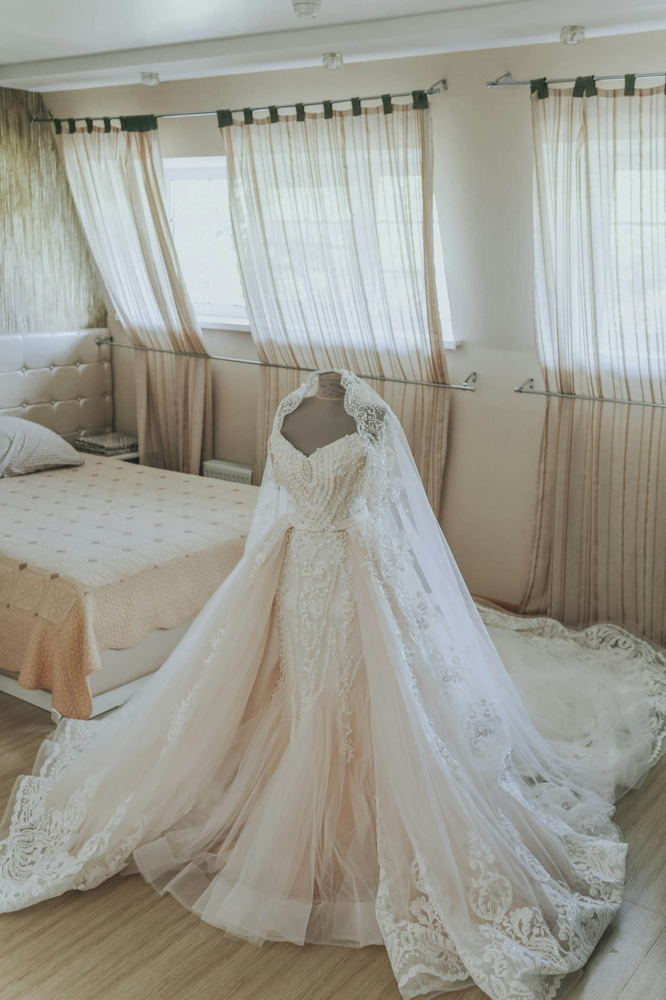

Wedding dresses
Hems and bustles, taking in or letting out, sleeve and back adjustments, and detailed work on lace and structure.
Boothwyn, Pennsylvania
Bridal gowns, formal wear, and everyday clothing — by appointment at 3362 Chichester Avenue.

About
Mia Alterations is an appointment-only tailoring shop in Boothwyn. Clients come here for wedding-dress work — hems, bustles, fittings, and careful changes to lace and structure — as well as everyday clothing and formal wear.
Appointments are scheduled by phone, so there is time to talk through the garment, the date it is needed, and the result you want.
Services
The list below reflects the work customers describe in public reviews. For a new garment, call to talk through the details and schedule a fitting.
Hems and bustles, taking in or letting out, sleeve and back adjustments, and detailed work on lace and structure.
Alterations for formal wear and regular clothing, including trousers and pieces for a wedding party.
Thoughtful adjustments when a garment needs more than a simple hem — including last-minute event timelines when a slot is available.
This is a preview site. Service details and timing should always be confirmed directly with Mia when you book.
From Google reviews
A few recent comments from public reviews. Wording is lightly trimmed for length; nothing here was invented.
★★★★★
“Mia was my life saver she fixed my dress to perfection when my wedding dress needed to be fixed in less then a week from the wedding date. She went above and beyond and even worked long hours to make sure my day was perfect.”
Google review, September 2025
★★★★★
“Somehow she managed to make my dress larger in the hips… The dress was so comfortable on my wedding day. She’s warm, kind, respectful, efficient, communicative, and talented.”
Google review, November 2025
★★★★★
“I was SO happy going to Mia’s alterations for my wedding dress! She was very quick, nice and was able to do alterations on two wedding dresses… She did an amazing job and also even drew me a diagram to help me remember how to bustle my dress.”
Google review, May 2024
Visit
Mia Alterations
3362 Chichester Ave, Unit 14
Boothwyn, PA 19061
Hours are listed on public directories and should be confirmed when you call. Appointments are required.